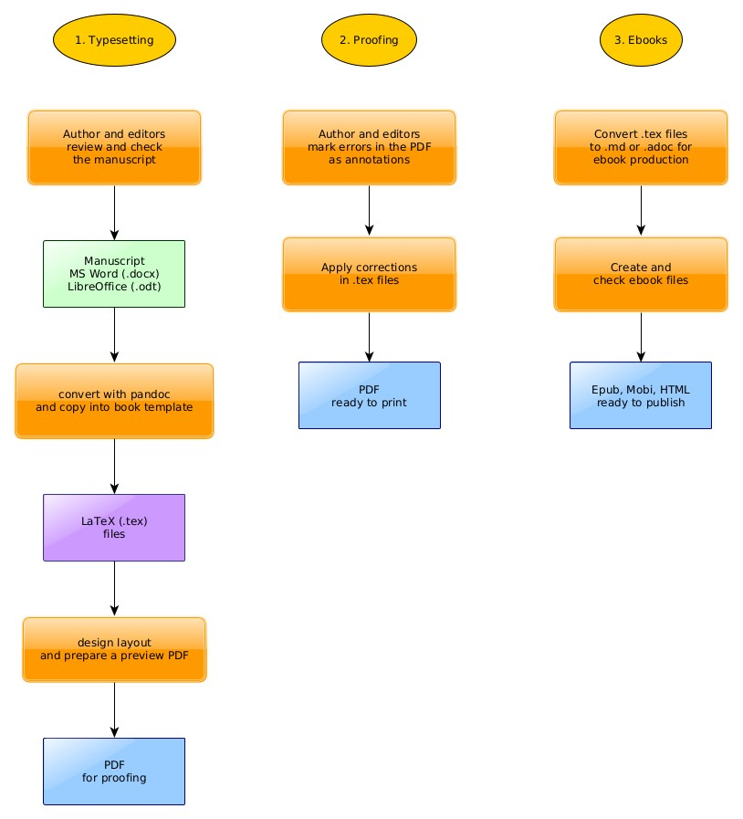
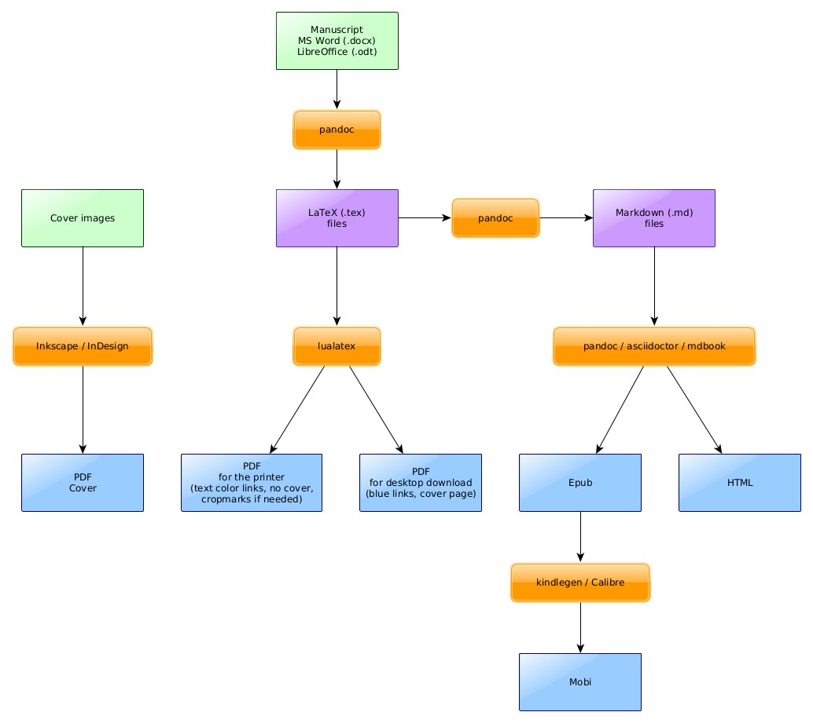

<?xml version="1.0" encoding="utf-8"?>
<!DOCTYPE html PUBLIC "-//W3C//DTD XHTML 1.0 Strict//EN"
"http://www.w3.org/TR/xhtml1/DTD/xhtml1-strict.dtd">
<html xmlns="http://www.w3.org/1999/xhtml" lang="en" xml:lang="en">
<head>
<!-- 2021-04-08 Thu 05:56 -->
<meta http-equiv="Content-Type" content="text/html;charset=utf-8" />
<meta name="viewport" content="width=device-width, initial-scale=1" />
<title>Book Production Guide</title>
<meta name="generator" content="Org mode" />
<style type="text/css">
 <!--/*--><![CDATA[/*><!--*/
  .title  { text-align: center;
             margin-bottom: .2em; }
  .subtitle { text-align: center;
              font-size: medium;
              font-weight: bold;
              margin-top:0; }
  .todo   { font-family: monospace; color: red; }
  .done   { font-family: monospace; color: green; }
  .priority { font-family: monospace; color: orange; }
  .tag    { background-color: #eee; font-family: monospace;
            padding: 2px; font-size: 80%; font-weight: normal; }
  .timestamp { color: #bebebe; }
  .timestamp-kwd { color: #5f9ea0; }
  .org-right  { margin-left: auto; margin-right: 0px;  text-align: right; }
  .org-left   { margin-left: 0px;  margin-right: auto; text-align: left; }
  .org-center { margin-left: auto; margin-right: auto; text-align: center; }
  .underline { text-decoration: underline; }
  #postamble p, #preamble p { font-size: 90%; margin: .2em; }
  p.verse { margin-left: 3%; }
  pre {
    border: 1px solid #ccc;
    box-shadow: 3px 3px 3px #eee;
    padding: 8pt;
    font-family: monospace;
    overflow: auto;
    margin: 1.2em;
  }
  pre.src {
    position: relative;
    overflow: auto;
    padding-top: 1.2em;
  }
  pre.src:before {
    display: none;
    position: absolute;
    background-color: white;
    top: -10px;
    right: 10px;
    padding: 3px;
    border: 1px solid black;
  }
  pre.src:hover:before { display: inline; margin-top: 14px;}
  /* Languages per Org manual */
  pre.src-asymptote:before { content: 'Asymptote'; }
  pre.src-awk:before { content: 'Awk'; }
  pre.src-C:before { content: 'C'; }
  /* pre.src-C++ doesn't work in CSS */
  pre.src-clojure:before { content: 'Clojure'; }
  pre.src-css:before { content: 'CSS'; }
  pre.src-D:before { content: 'D'; }
  pre.src-ditaa:before { content: 'ditaa'; }
  pre.src-dot:before { content: 'Graphviz'; }
  pre.src-calc:before { content: 'Emacs Calc'; }
  pre.src-emacs-lisp:before { content: 'Emacs Lisp'; }
  pre.src-fortran:before { content: 'Fortran'; }
  pre.src-gnuplot:before { content: 'gnuplot'; }
  pre.src-haskell:before { content: 'Haskell'; }
  pre.src-hledger:before { content: 'hledger'; }
  pre.src-java:before { content: 'Java'; }
  pre.src-js:before { content: 'Javascript'; }
  pre.src-latex:before { content: 'LaTeX'; }
  pre.src-ledger:before { content: 'Ledger'; }
  pre.src-lisp:before { content: 'Lisp'; }
  pre.src-lilypond:before { content: 'Lilypond'; }
  pre.src-lua:before { content: 'Lua'; }
  pre.src-matlab:before { content: 'MATLAB'; }
  pre.src-mscgen:before { content: 'Mscgen'; }
  pre.src-ocaml:before { content: 'Objective Caml'; }
  pre.src-octave:before { content: 'Octave'; }
  pre.src-org:before { content: 'Org mode'; }
  pre.src-oz:before { content: 'OZ'; }
  pre.src-plantuml:before { content: 'Plantuml'; }
  pre.src-processing:before { content: 'Processing.js'; }
  pre.src-python:before { content: 'Python'; }
  pre.src-R:before { content: 'R'; }
  pre.src-ruby:before { content: 'Ruby'; }
  pre.src-sass:before { content: 'Sass'; }
  pre.src-scheme:before { content: 'Scheme'; }
  pre.src-screen:before { content: 'Gnu Screen'; }
  pre.src-sed:before { content: 'Sed'; }
  pre.src-sh:before { content: 'shell'; }
  pre.src-sql:before { content: 'SQL'; }
  pre.src-sqlite:before { content: 'SQLite'; }
  /* additional languages in org.el's org-babel-load-languages alist */
  pre.src-forth:before { content: 'Forth'; }
  pre.src-io:before { content: 'IO'; }
  pre.src-J:before { content: 'J'; }
  pre.src-makefile:before { content: 'Makefile'; }
  pre.src-maxima:before { content: 'Maxima'; }
  pre.src-perl:before { content: 'Perl'; }
  pre.src-picolisp:before { content: 'Pico Lisp'; }
  pre.src-scala:before { content: 'Scala'; }
  pre.src-shell:before { content: 'Shell Script'; }
  pre.src-ebnf2ps:before { content: 'ebfn2ps'; }
  /* additional language identifiers per "defun org-babel-execute"
       in ob-*.el */
  pre.src-cpp:before  { content: 'C++'; }
  pre.src-abc:before  { content: 'ABC'; }
  pre.src-coq:before  { content: 'Coq'; }
  pre.src-groovy:before  { content: 'Groovy'; }
  /* additional language identifiers from org-babel-shell-names in
     ob-shell.el: ob-shell is the only babel language using a lambda to put
     the execution function name together. */
  pre.src-bash:before  { content: 'bash'; }
  pre.src-csh:before  { content: 'csh'; }
  pre.src-ash:before  { content: 'ash'; }
  pre.src-dash:before  { content: 'dash'; }
  pre.src-ksh:before  { content: 'ksh'; }
  pre.src-mksh:before  { content: 'mksh'; }
  pre.src-posh:before  { content: 'posh'; }
  /* Additional Emacs modes also supported by the LaTeX listings package */
  pre.src-ada:before { content: 'Ada'; }
  pre.src-asm:before { content: 'Assembler'; }
  pre.src-caml:before { content: 'Caml'; }
  pre.src-delphi:before { content: 'Delphi'; }
  pre.src-html:before { content: 'HTML'; }
  pre.src-idl:before { content: 'IDL'; }
  pre.src-mercury:before { content: 'Mercury'; }
  pre.src-metapost:before { content: 'MetaPost'; }
  pre.src-modula-2:before { content: 'Modula-2'; }
  pre.src-pascal:before { content: 'Pascal'; }
  pre.src-ps:before { content: 'PostScript'; }
  pre.src-prolog:before { content: 'Prolog'; }
  pre.src-simula:before { content: 'Simula'; }
  pre.src-tcl:before { content: 'tcl'; }
  pre.src-tex:before { content: 'TeX'; }
  pre.src-plain-tex:before { content: 'Plain TeX'; }
  pre.src-verilog:before { content: 'Verilog'; }
  pre.src-vhdl:before { content: 'VHDL'; }
  pre.src-xml:before { content: 'XML'; }
  pre.src-nxml:before { content: 'XML'; }
  /* add a generic configuration mode; LaTeX export needs an additional
     (add-to-list 'org-latex-listings-langs '(conf " ")) in .emacs */
  pre.src-conf:before { content: 'Configuration File'; }

  table { border-collapse:collapse; }
  caption.t-above { caption-side: top; }
  caption.t-bottom { caption-side: bottom; }
  td, th { vertical-align:top;  }
  th.org-right  { text-align: center;  }
  th.org-left   { text-align: center;   }
  th.org-center { text-align: center; }
  td.org-right  { text-align: right;  }
  td.org-left   { text-align: left;   }
  td.org-center { text-align: center; }
  dt { font-weight: bold; }
  .footpara { display: inline; }
  .footdef  { margin-bottom: 1em; }
  .figure { padding: 1em; }
  .figure p { text-align: center; }
  .equation-container {
    display: table;
    text-align: center;
    width: 100%;
  }
  .equation {
    vertical-align: middle;
  }
  .equation-label {
    display: table-cell;
    text-align: right;
    vertical-align: middle;
  }
  .inlinetask {
    padding: 10px;
    border: 2px solid gray;
    margin: 10px;
    background: #ffffcc;
  }
  #org-div-home-and-up
   { text-align: right; font-size: 70%; white-space: nowrap; }
  textarea { overflow-x: auto; }
  .linenr { font-size: smaller }
  .code-highlighted { background-color: #ffff00; }
  .org-info-js_info-navigation { border-style: none; }
  #org-info-js_console-label
    { font-size: 10px; font-weight: bold; white-space: nowrap; }
  .org-info-js_search-highlight
    { background-color: #ffff00; color: #000000; font-weight: bold; }
  .org-svg { width: 90%; }
  /*]]>*/-->
</style>
<link rel="stylesheet" type="text/css" href="https://fniessen.github.io/org-html-themes/src/readtheorg_theme/css/htmlize.css"/>
<link rel="stylesheet" type="text/css" href="https://fniessen.github.io/org-html-themes/src/readtheorg_theme/css/readtheorg.css"/>
<script src="https://ajax.googleapis.com/ajax/libs/jquery/2.1.3/jquery.min.js"></script>
<script src="https://maxcdn.bootstrapcdn.com/bootstrap/3.3.4/js/bootstrap.min.js"></script>
<script type="text/javascript" src="https://fniessen.github.io/org-html-themes/src/lib/js/jquery.stickytableheaders.min.js"></script>
<script type="text/javascript" src="https://fniessen.github.io/org-html-themes/src/readtheorg_theme/js/readtheorg.js"></script>
<script type="text/javascript">
// @license magnet:?xt=urn:btih:e95b018ef3580986a04669f1b5879592219e2a7a&dn=public-domain.txt Public Domain
<!--/*--><![CDATA[/*><!--*/
     function CodeHighlightOn(elem, id)
     {
       var target = document.getElementById(id);
       if(null != target) {
         elem.classList.add("code-highlighted");
         target.classList.add("code-highlighted");
       }
     }
     function CodeHighlightOff(elem, id)
     {
       var target = document.getElementById(id);
       if(null != target) {
         elem.classList.remove("code-highlighted");
         target.classList.remove("code-highlighted");
       }
     }
    /*]]>*///-->
// @license-end
</script>
<script type="text/x-mathjax-config">
    MathJax.Hub.Config({
        displayAlign: "center",
        displayIndent: "0em",

        "HTML-CSS": { scale: 100,
                        linebreaks: { automatic: "false" },
                        webFont: "TeX"
                       },
        SVG: {scale: 100,
              linebreaks: { automatic: "false" },
              font: "TeX"},
        NativeMML: {scale: 100},
        TeX: { equationNumbers: {autoNumber: "AMS"},
               MultLineWidth: "85%",
               TagSide: "right",
               TagIndent: ".8em"
             }
});
</script>
<script type="text/javascript"
        src="https://cdnjs.cloudflare.com/ajax/libs/mathjax/2.7.0/MathJax.js?config=TeX-AMS_HTML"></script>
</head>
<body>
<div id="content">
<h1 class="title">Book Production Guide</h1>
<div id="table-of-contents">
<h2>Table of Contents</h2>
<div id="text-table-of-contents">
<ul>
<li><a href="#orge2f8a96">1. Overview</a>
<ul>
<li><a href="#orgb58f918">1.1. Editing Stages</a></li>
<li><a href="#org3c66a6e">1.2. Production Pipeline</a></li>
</ul>
</li>
<li><a href="#org8621ce2">2. Book Production Guide</a>
<ul>
<li><a href="#orgd0c7f9d">2.1. Finished Release Files</a></li>
<li><a href="#org7adf33d">2.2. Init</a></li>
<li><a href="#org980c7c5">2.3. Convert the manuscript</a>
<ul>
<li><a href="#orgfb2fc9e">2.3.1. converting ODT or DOCX to TEX</a></li>
<li><a href="#orgf47c8a7">2.3.2. converting with pandoc</a></li>
<li><a href="#orgb9146c6">2.3.3. separating chapters</a></li>
<li><a href="#org0d28bf9">2.3.4. getting it to compile</a></li>
</ul>
</li>
<li><a href="#org7aaaebd">2.4. design the pages</a>
<ul>
<li><a href="#org994832b">2.4.1. creating page mock-ups</a></li>
<li><a href="#orgc4e79e0">2.4.2. selecting fonts</a></li>
<li><a href="#orgb7e5250">2.4.3. designing sample page layouts</a></li>
</ul>
</li>
<li><a href="#org49a4487">2.5. clean-up the formatting</a>
<ul>
<li><a href="#orga007980">2.5.1. general</a></li>
<li><a href="#org0c40edc">2.5.2. review</a></li>
<li><a href="#orgb42937a">2.5.3. basic typefaces</a></li>
<li><a href="#org13ad4d1">2.5.4. go through the files and fix syntax</a></li>
</ul>
</li>
<li><a href="#org0f7225a">2.6. implement the design</a>
<ul>
<li><a href="#orgadbd5f4">2.6.1. chapter headings for front- main- and backmatter</a></li>
<li><a href="#org24569c6">2.6.2. section headings</a></li>
<li><a href="#org6bde3fc">2.6.3. running header and footer</a></li>
<li><a href="#org99c949e">2.6.4. book opening page</a></li>
<li><a href="#orgbddbe30">2.6.5. titlepage</a></li>
<li><a href="#org3d3b15f">2.6.6. gift of Dhamma page</a></li>
<li><a href="#orgf55d4a6">2.6.7. add all expected parts and chapters, use lipsum if necessary</a></li>
<li><a href="#orgc8d3ae4">2.6.8. cover</a></li>
</ul>
</li>
<li><a href="#orgd6c8335">2.7. extend the typefaces</a></li>
<li><a href="#org378803a">2.8. format the text</a></li>
<li><a href="#orgf29c795">2.9. add the graphics</a></li>
<li><a href="#orge71c4fb">2.10. review the details</a>
<ul>
<li><a href="#orgf8c3c14">2.10.1. style and formatting tweaks</a></li>
<li><a href="#org9e32217">2.10.2. title casing in chapter titles and TOC</a></li>
<li><a href="#org1767fe3">2.10.3. find bad type &#x2013; save PDF for later diff</a>
<ul>
<li><a href="#org032d973">2.10.3.1. manually compare the PDF with the manuscript</a></li>
<li><a href="#org78b1c99">2.10.3.2. fix clubs, orphans, widows, hyphens</a></li>
<li><a href="#orgb053495">2.10.3.3. page numbering</a></li>
<li><a href="#org6c2221a">2.10.3.4. check four corners of the PDF</a></li>
<li><a href="#org17ebf12">2.10.3.5. hyphenation</a></li>
<li><a href="#orgcd0baf8">2.10.3.6. line- or pagebreak after first word</a></li>
<li><a href="#org007cf7a">2.10.3.7. quotation style</a></li>
</ul>
</li>
<li><a href="#org15101e7">2.10.4. fix punctuation mistakes with shell regex</a></li>
<li><a href="#orgf00485c">2.10.5. Sangha Words practices</a>
<ul>
<li><a href="#org5d36b20">2.10.5.1. typos</a></li>
<li><a href="#org0e57aea">2.10.5.2. Pali spelling</a></li>
</ul>
</li>
<li><a href="#org00de1cc">2.10.6. review the front and back copyright pages</a></li>
<li><a href="#orge55548b">2.10.7. grep and review TODO, FIXME, NOTE</a></li>
</ul>
</li>
<li><a href="#orgfed4c38">2.11. send the PDF for proofing</a></li>
<li><a href="#org88dcd6b">2.12. create the cover</a></li>
<li><a href="#orge04b15f">2.13. create the ebooks</a>
<ul>
<li><a href="#orgc71f637">2.13.1. converting TeX to Asciidoc</a></li>
<li><a href="#org8ab2ec6">2.13.2. creating the web PDF</a></li>
<li><a href="#org966fd52">2.13.3. testing the ebooks</a></li>
<li><a href="#orgc8a4501">2.13.4. photo conversions</a></li>
</ul>
</li>
<li><a href="#orgc54cded">2.14. final checks</a></li>
<li><a href="#orgfa92f76">2.15. submit to the archive</a></li>
</ul>
</li>
<li><a href="#org9c12d26">3. Digital Proof Checklist</a>
<ul>
<li><a href="#orgb9cfc9b">3.1. Margins</a></li>
<li><a href="#orga02a858">3.2. Text block position</a></li>
<li><a href="#orge1bf910">3.3. Text contrast</a></li>
<li><a href="#org690b1e8">3.4. Cover</a></li>
</ul>
</li>
<li><a href="#org6cbe30d">4. Commands</a>
<ul>
<li><a href="#org5b47194">4.1. Test for weird spaces</a></li>
<li><a href="#org57fd154">4.2. Punctuation with space?</a></li>
<li><a href="#orgcc84b83">4.3. Check and remove leading and trailing whitespace</a></li>
<li><a href="#org1615c91">4.4. Is this chapter free flowing, or does it have spacing or pagebreaks?</a></li>
</ul>
</li>
<li><a href="#org64c6bfc">5. Design sections of a book</a></li>
</ul>
</div>
</div>
<p>
<a href="./index.html">← Back to Index</a>
</p>

<div id="outline-container-orge2f8a96" class="outline-2">
<h2 id="orge2f8a96"><span class="section-number-2">1</span> Overview</h2>
<div class="outline-text-2" id="text-1">
</div>
<div id="outline-container-orgb58f918" class="outline-3">
<h3 id="orgb58f918"><span class="section-number-3">1.1</span> Editing Stages</h3>
<div class="outline-text-3" id="text-1-1">

<div id="org9b1370f" class="figure">
<p>
</p>
</div>
</div>
</div>

<div id="outline-container-org3c66a6e" class="outline-3">
<h3 id="org3c66a6e"><span class="section-number-3">1.2</span> Production Pipeline</h3>
<div class="outline-text-3" id="text-1-2">

<div id="org5dd81fa" class="figure">
<p>
</p>
</div>
</div>
</div>
</div>

<div id="outline-container-org8621ce2" class="outline-2">
<h2 id="org8621ce2"><span class="section-number-2">2</span> Book Production Guide</h2>
<div class="outline-text-2" id="text-2">
</div>
<div id="outline-container-orgd0c7f9d" class="outline-3">
<h3 id="orgd0c7f9d"><span class="section-number-3">2.1</span> Finished Release Files</h3>
<div class="outline-text-3" id="text-2-1">
<p>
The following files are released at the end of a typical book production:
</p>

<p>
<b>For print:</b>
</p>

<ul class="org-ul">
<li>mainmatter PDF, with cropmarks if needed for bleeded graphics</li>
<li>cover PDF</li>
<li>cover UV mask PDF, if spot varnish is requested</li>
</ul>

<p>
<b>For ebooks:</b>
</p>

<ul class="org-ul">
<li>mainmatter PDF, no cropmarks, first page is the book cover</li>
<li>Epub</li>
<li>Mobi (produced from the Epub)</li>
<li>HTML pages, if published on a website</li>
</ul>

<p>
<b>Sources:</b>
</p>

<ul class="org-ul">
<li>mainmatter sources ZIP</li>
<li>cover sources ZIP</li>
</ul>
</div>
</div>

<div id="outline-container-org7adf33d" class="outline-3">
<h3 id="org7adf33d"><span class="section-number-3">2.2</span> Init</h3>
<div class="outline-text-3" id="text-2-2">
<p>
Clone the <a href="https://github.com/profound-labs/prophecy-template">prophecy-template</a> and init a new repo:
</p>

<pre class="example">
git clone https://github.com/profound-labs/prophecy-template ./mindfulness-deathless-pt
cd mindfulness-deathless-pt
rm .git -rf
git init
git commit --allow-empty -m initial
</pre>


<p>
Run Ruby <code>bundler</code> to parse the Gemfile and install Ruby libs:
</p>

<pre class="example">
bundle
</pre>


<p>
Quick edit:
</p>

<ul class="org-ul">
<li>README.md</li>
<li>main.tex
<ul class="org-ul">
<li>leave TOC for after conversion</li>
<li>set <code>babelLanguage</code></li>
<li>set hypersetup / pdflang</li>
</ul></li>
<li>main.adoc
<ul class="org-ul">
<li>leave TOC for after conversion</li>
<li>edit data tags if known</li>
<li>set lang</li>
</ul></li>
</ul>

<p>
Check LICENSE.txt
</p>

<p>
Make the first commit. Murmur an invocation of the muse.
</p>

<pre class="example">
git add -A .
git commit -m first
</pre>
</div>
</div>

<div id="outline-container-org980c7c5" class="outline-3">
<h3 id="org980c7c5"><span class="section-number-3">2.3</span> Convert the manuscript</h3>
<div class="outline-text-3" id="text-2-3">
</div>
<div id="outline-container-orgfb2fc9e" class="outline-4">
<h4 id="orgfb2fc9e"><span class="section-number-4">2.3.1</span> converting ODT or DOCX to TEX</h4>
<div class="outline-text-4" id="text-2-3-1">
<p>
Open the manuscript file in LibreOffice, save as DOCX.
</p>

<p>
Replace double linebreaks with paragraph breaks.
</p>

<p>
Remove non-breaking space if it has no purpose.
</p>
</div>
</div>

<div id="outline-container-orgf47c8a7" class="outline-4">
<h4 id="orgf47c8a7"><span class="section-number-4">2.3.2</span> converting with pandoc</h4>
<div class="outline-text-4" id="text-2-3-2">
<p>
The pandoc Docx reader can extract images, deals better with trailing spaced
italics, footnotes and produces cleaner headers.
</p>

<p>
In the most simple case:
</p>

<pre class="example">
pandoc -f docx -t latex --wrap=none trav.docx &gt; trav.docx.tex
</pre>


<p>
Use <code>--extract-media=./images</code> if needed.
</p>

<p>
More involved:
</p>

<pre class="example">
./convert.sh
</pre>


<div class="org-src-container">
<pre class="src src-bash"><span style="color: #7c6f64;">#</span><span style="color: #7c6f64;">!/bin/</span><span style="color: #fb4933;">bash</span>

<span style="color: #fb4933;">for</span> i<span style="color: #fb4933;"> in</span> $<span style="color: #458588;">(</span>ls -1 *.docx<span style="color: #458588;">)</span>; <span style="color: #fb4933;">do</span>
    <span style="color: #fe8019;">echo</span> <span style="color: #b8bb26;">"$i"</span>
    pandoc -f docx -t latex+footnotes -o <span style="color: #b8bb26;">"./tex/$i.tex"</span> <span style="color: #b8bb26;">"$i"</span>
<span style="color: #fb4933;">done</span>

<span style="color: #7c6f64;"># </span><span style="color: #7c6f64;">remove \label{}</span>
sed -i <span style="color: #b8bb26;">'s/\\label{[^}]\+}//'</span> ./tex/*.tex

<span style="color: #7c6f64;"># </span><span style="color: #7c6f64;">fix {[} and {]}</span>
sed -i -e <span style="color: #b8bb26;">'s/{\[}/[/g; s/{\]}/]/g;'</span> ./tex/*.tex

<span style="color: #7c6f64;"># </span><span style="color: #7c6f64;">remove roman numerals from section titles</span>
sed -i <span style="color: #b8bb26;">'s/\\section{[IV]\+\. */\\section{/'</span> ./tex/*.tex

<span style="color: #7c6f64;"># </span><span style="color: #7c6f64;">remove double blanks</span>
<span style="color: #fb4933;">for</span> i<span style="color: #fb4933;"> in</span> $<span style="color: #458588;">(</span>ls -1 ./tex/*.tex<span style="color: #458588;">)</span>; <span style="color: #fb4933;">do</span>
    cat -s <span style="color: #b8bb26;">"$i"</span> &gt; <span style="color: #b8bb26;">"$i.tmp"</span>
    mv <span style="color: #b8bb26;">"$i.tmp"</span> <span style="color: #b8bb26;">"$i"</span>
<span style="color: #fb4933;">done</span>
</pre>
</div>

<p>
After this, copy in the <code>tex</code> contents to the repository.
</p>

<p>
Just get it to compile. Fix only major errors at this time, or redo the conversion.
</p>
</div>
</div>

<div id="outline-container-orgb9146c6" class="outline-4">
<h4 id="orgb9146c6"><span class="section-number-4">2.3.3</span> separating chapters</h4>
<div class="outline-text-4" id="text-2-3-3">
<p>
Open the tex and copy chapters into separate files in <code>./manuscript/tex/</code>, clean
up only the header and subheaders for now.
</p>

<p>
Comment out image references.
</p>
</div>
</div>

<div id="outline-container-org0d28bf9" class="outline-4">
<h4 id="org0d28bf9"><span class="section-number-4">2.3.4</span> getting it to compile</h4>
<div class="outline-text-4" id="text-2-3-4">
<p>
Fix up the text just enough to get it compile.
</p>

<p>
Just add <code>\chapter</code>, leave quote formatting, etc. for later.
</p>
</div>
</div>
</div>

<div id="outline-container-org7aaaebd" class="outline-3">
<h3 id="org7aaaebd"><span class="section-number-3">2.4</span> design the pages</h3>
<div class="outline-text-3" id="text-2-4">
</div>
<div id="outline-container-org994832b" class="outline-4">
<h4 id="org994832b"><span class="section-number-4">2.4.1</span> creating page mock-ups</h4>
<div class="outline-text-4" id="text-2-4-1">
<p>
Inkscape is easy to use when experimenting with fonts, sizes and layout.
</p>

<p>
Open a previous PDF with Inkscape, import a typical page and start changing elements.
&rsquo;Save a Copy&rsquo; will save a PDF, print to see how it looks on paper.
</p>
</div>
</div>

<div id="outline-container-orgc4e79e0" class="outline-4">
<h4 id="orgc4e79e0"><span class="section-number-4">2.4.2</span> selecting fonts</h4>
</div>
<div id="outline-container-orgb7e5250" class="outline-4">
<h4 id="orgb7e5250"><span class="section-number-4">2.4.3</span> designing sample page layouts</h4>
<div class="outline-text-4" id="text-2-4-3">
<p>
Consider:
</p>

<ul class="org-ul">
<li>chapter and section headings</li>
<li>appendix chapters</li>
<li>backmatter chapters</li>
<li>running header and footer</li>
<li>TOC</li>
<li>footnotes</li>
<li>endnotes</li>

<li>conversations: \speaker{Ajahn Chah}</li>
<li>Q &amp; A: &#x2026;</li>
<li>Q: &#x2026;</li>
<li>A: &#x2026;</li>
</ul>

<p>
Get the book to compile with the basic layout with the fonts you want to use.
</p>

<p>
Open (not Import) the the default page in Inkscape as vectors to get basic layout
sizes and positions.
</p>

<p>
Try design ideas, export to image and send to the author for review. Don&rsquo;t
export PDF, it doesn&rsquo;t display reliably.
</p>

<p>
Try <code>Internal Import</code> first, use <code>Replace fonts</code>. It is useful to have pieces as
text elements instead of paths.
</p>

<p>
Use <code>Poppler Import</code> if there are tricky marks or shapes on the page that the
navive import produces artefacts for. Maybe you&rsquo;ll have to select them and copy
over for best results.
</p>

<p>
Import:
</p>

<ul class="org-ul">
<li>chapter page</li>
<li>verso page</li>
<li>recto page</li>
<li>TOC page</li>
</ul>

<p>
Use separate .svg files, each page will need different guides for margin alignments.
</p>

<p>
Add a border rectangle with 0.4pt stroke, and <code>Save a Copy</code> as PDFs for printing.
</p>
</div>
</div>
</div>

<div id="outline-container-org49a4487" class="outline-3">
<h3 id="org49a4487"><span class="section-number-3">2.5</span> clean-up the formatting</h3>
<div class="outline-text-3" id="text-2-5">
</div>
<div id="outline-container-orga007980" class="outline-4">
<h4 id="orga007980"><span class="section-number-4">2.5.1</span> general</h4>
<div class="outline-text-4" id="text-2-5-1">
<p>
Look for bad semantic formatting syntax, fix the easy fixes.
</p>

<p>
Fix typos and conversion artefacts.
</p>

<p>
Go through the chapter files one by one and fix the easy fixes and immediately
apparent errors.
</p>
</div>
</div>

<div id="outline-container-org0c40edc" class="outline-4">
<h4 id="org0c40edc"><span class="section-number-4">2.5.2</span> review</h4>
<div class="outline-text-4" id="text-2-5-2">
<p>
Wrap thai in <code>\thai</code>:
</p>

<pre class="example">
rg '\p{Thai}' ./*.tex
</pre>


<p>
0-2 letter italics:
</p>

<pre class="example">
rg '\\emph{[.{0,2}]}'
</pre>


<p>
<code>\footnote</code> before full stop, comma, quotemark.
</p>

<p>
<code>\footnote</code> before closing quotemark.
</p>

<p>
Pali words in italics.
</p>

<p>
Full stop, quote, etc. not included in the italics.
</p>

<p>
Convert Glossary items to <code>glossarydescription</code>.
</p>

<pre class="example">
\begin{glossarydescription}

\item[anicca] (Pali) Impermanence: one of the \emph{three characteristics of
    existence} along with not-self (\emph{anattā}) and unsatisfactoriness
  (\emph{dukkha}).

\end{glossarydescription}
</pre>
</div>
</div>

<div id="outline-container-orgb42937a" class="outline-4">
<h4 id="orgb42937a"><span class="section-number-4">2.5.3</span> basic typefaces</h4>
<div class="outline-text-4" id="text-2-5-3">
<p>
Review basic typeface settings for the design in <code>prophecy.cls</code>.
</p>
</div>
</div>

<div id="outline-container-org13ad4d1" class="outline-4">
<h4 id="org13ad4d1"><span class="section-number-4">2.5.4</span> go through the files and fix syntax</h4>
<div class="outline-text-4" id="text-2-5-4">
<p>
Don&rsquo;t reflow the text in emacs (Alt+Q), to make it easier to diff direct pandoc output.
</p>

<p>
Look for <code>{[}</code> from the coversion:
</p>

<pre class="example">
pt -e "{\[}|{\]}"
</pre>


<p>
Use <code>neovim</code> when using macros.
</p>

<p>
Search for speaker names:
</p>

<pre class="example">
/^ *([[:alpha:]']\+ [[:alpha:]']\+
</pre>


<p>
Moving speaker names to parens with a macro (pasted here in nvim):
</p>

<pre class="example">
"adi(0df {O
</pre>

<p>
% Speaker: &ldquo;ap
</p>

<p>
Replace <code>\textsuperscript{th}</code> with <code>th</code>.
</p>

<p>
Replace <code>quote</code> environment with <code>lpchah</code>:
</p>

<pre class="example">
perl -0777 -i -pe "s/(% Speaker: Luang Por\n+)\\\\begin\{quote\}(.*?)\\\\end\{quote\}/\1\\\\begin{lpchah}\2\\\\end{lpchah}/gs" ./*.tex
</pre>


<p>
Review with <code>meld</code>, it will show the changes since the last commit.
</p>

<p>
Find when Luang Por is not wrapped in an environment:
</p>

<pre class="example">
pcregrep -M '^% Speaker: Luang Por\n\s[^\s\\]' ./*.tex
</pre>


<p>
Find speakers followed by and environment, should be all Luang Por:
</p>

<pre class="example">
pcregrep -M '^% Speaker: [^\n]+\n\s\\begin' ./*.tex | grep -v 'Speaker: Luang Por' | grep -v 'lpchah' | uniq
</pre>


<p>
Fix closing parens in <code>\emph</code>:
</p>

<pre class="example">
(\emph{Upasampadā)} to (\emph{Upasampadā})
</pre>


<pre class="example">
perl -0777 -i -pe "s/(\(\\\\emph\{[^\\\\\)}]+)\)\}/\1})/gs" ./*.tex
</pre>


<p>
Fix quote marks included in <code>emph</code>:
</p>

<pre class="example">
indicated by the old Thai monastic idiom referring to it: `\emph{prot
sat',} or `saving sentient beings'. Seeing the monks' restrained and
</pre>


<pre class="example">
`\emph{Attā hi attano nātho.' `}
</pre>


<pre class="example">
grep -E '[[:punct:]]\}' ./*.tex
</pre>


<p>
Normalize <code>\emph{}</code> jumbles.
</p>

<pre class="example">
\emph{Mah}ā\emph{nik}ā\emph{ya} and \emph{Dhammayut nik}ā\emph{ya}
(\emph{pa}ṭ\emph{ipatti})
</pre>


<p>
It will need two or more passes.
</p>

<pre class="example">
perl -0777 -i -pe "s/(\\\\emph\{[ [:alpha:]āīūṃṅñṭḍṇḷĀĪŪṂṄÑṬḌṆḶ]+)\}([[:alpha:]āīūṃṅñṭḍṇḷĀĪŪṂṄÑṬḌṆḶ]+)\\\\emph\{([ [:alpha:]āīūṃṅñṭḍṇḷĀĪŪṂṄÑṬḌṆḶ]+\})/\1\2\3/g" ./*.tex
</pre>


<p>
Any more of this mess?
</p>

<pre class="example">
pcregrep '\}[-[:alpha:]āīūṃṅñṭḍṇḷĀĪŪṂṄÑṬḌṆḶ]+\\' ./*.tex
</pre>


<p>
Find cases of 0-2 characters in <code>\emph</code>. Note that <code>\emph{I}</code> is legitimate.
</p>

<pre class="example">
grep -E '\\emph{.{0,2}}' ./*.tex
</pre>


<p>
Remove <code>emph</code> from quotes, parens, commas:
</p>

<pre class="example">
\emph{.}
\emph{,}
\emph{'}
\emph{(`}
\emph{--}
\emph{. }
\emph{(}white-robed nuns)
</pre>


<pre class="example">
perl -0777 -i -pe "s/\\\\emph\{([ ,:\.\'\`\(\)-]{0,2})\}/\1/g" ./*.tex
</pre>


<p>
Find footnotes before punctuation.
</p>

<pre class="example">
Here we go again. Another \emph{kappatī}\footnote{A Pali
  word from the mealtime blessing. Luang Por's mnemonic for `a cup of
  tea'.}.
</pre>


<pre class="example">
All this is called \emph{vitakka}\footnote{In this paragraph Luang Por
  explains the five mental states that define the first state of deep
  absorption concentration (\emph{jhāna}).}: raising something up
</pre>


<pre class="example">
pcregrep -M '\\footnote\{[^\n]+\}[[:punct:]]' ./*.tex
</pre>


<p>
Don&rsquo;t italicize the parens wrapping the terms, unless already in an italic block. Follow Bringhurst, not Chicago. Use the form:
</p>

<pre class="example">
(\emph{nimitta})
</pre>


<p>
<a href="https://tex.stackexchange.com/questions/13048/upright-parentheses-in-italic-text">https://tex.stackexchange.com/questions/13048/upright-parentheses-in-italic-text</a>
</p>

<p>
<a href="https://tex.stackexchange.com/questions/14983/should-i-include-punctuation-marks-in-emph-or-should-i-place-those-marks-after">https://tex.stackexchange.com/questions/14983/should-i-include-punctuation-marks-in-emph-or-should-i-place-those-marks-after</a>
</p>

<p>
<a href="https://english.stackexchange.com/questions/9878/italics-and-punctuation">https://english.stackexchange.com/questions/9878/italics-and-punctuation</a>
</p>

<p>
Find and fix terms with italicized parens:
</p>

<pre class="example">
grep -E '\\emph\{\(' ./*.tex
</pre>


<pre class="example">
\emph{(MN 112)}
\emph{(nimitta)}
\emph{(parikamma-nimitta).}
\emph{(uggaha-nimitta).}
\emph{(paṭibhāga-nimitta).''}
</pre>


<pre class="example">
perl -0777 -i -pe "s/\\\\emph\{\(([- \.0-9[:punct:][:alpha:]āīūṃṅñṭḍṇḷĀĪŪṂṄÑṬḌṆḶ]+)\)([^\}]*)\}/(\\\\emph{\1})\2/g" ./*.tex
</pre>


<p>
Find Thai and wrap it in <code>\thai{}</code> to set the appropriate font.
</p>

<pre class="example">
pt -e '\p{Thai}' ./*.tex
</pre>


<p>
Find weird whitespace.
</p>

<pre class="example">
grep -f ~/prods/weird-spaces ./*.tex
</pre>


<p>
Find triple full stops instead of ellipses.
</p>

<pre class="example">
grep -E '\.\.\.' ./*.tex
</pre>


<p>
Fix quotes ending in triple <code>'''</code> with <code>\thinspace</code>. Otherwise you get <code>”’</code>, when you need <code>’ ”</code>.
</p>

<pre class="example">
grep -E "'''" ./*.tex
</pre>


<pre class="example">
moment, looking at the babies, then laughed quietly to himself, `Oh
well, oh well.'\thinspace ''
</pre>


<p>
Other bad quote patterns:
</p>

<pre class="example">
``'Yes, they all die.' I answered irritably.''
```Yes.' I replied sheepishly.''
good. `\emph{Attā hi attano nātho.' `}It's the self that is the refuge
</pre>


<p>
Convert all smart-quote characters to LaTeX equivalents to avoid ambiguity in pattern matching.
</p>

<pre class="example">
sed -i -e "s/‘/\`/g; s/’/'/g; s/“/\`\`/g; s/”/''/g;" ./*.tex
</pre>


<p>
Find un-smart single and double quotes
</p>

<pre class="example">
grep -E " '{1,2}\w" ./*.tex
sed -i "s/ '\(\w\)/ \`\1/g" ./*.tex
</pre>


<pre class="example">
grep -E ' "{1,2}\w' ./*.tex
sed -i 's/ "\(\w\)/ \`\`\1/g' ./*.tex
</pre>


<pre class="example">
grep -E '\w"{1,2}[^[:alpha:]-]' ./*.tex
sed -i "s/\(\w\)\"\([^[:alpha:]-]\)/\1''\2/g" ./*.tex
</pre>


<p>
Or, if needing the unicode quotation marks instead, as in the case of ebooks:
</p>

<pre class="example">
sed -i -f ../../helpers/smart_quotes_unicode.sed ./*.adoc
</pre>


<p>
Find - (minus) instead of &#x2013; (en-dash)
</p>

<pre class="example">
grep -E ' - ' ./*.tex
grep -E '[^[:alpha:]0-9-]-[^[:alpha:]0-9-]' ./*.tex
</pre>


<p>
Find places where nested quotes don&rsquo;t alternate single and double quote marks.
</p>

<pre class="example">
pcregrep -M "[^\`]\`[^\`][^']*[^\`]\`[^\`]" ./*.tex
</pre>


<p>
Review the spaces before and after <code>\ldots{}</code>
</p>

<pre class="example">
pcregrep -M "[^ ]\\\\ldots{} " ./*.tex
</pre>
</div>
</div>
</div>

<div id="outline-container-org0f7225a" class="outline-3">
<h3 id="org0f7225a"><span class="section-number-3">2.6</span> implement the design</h3>
<div class="outline-text-3" id="text-2-6">
</div>
<div id="outline-container-orgadbd5f4" class="outline-4">
<h4 id="orgadbd5f4"><span class="section-number-4">2.6.1</span> chapter headings for front- main- and backmatter</h4>
</div>
<div id="outline-container-org24569c6" class="outline-4">
<h4 id="org24569c6"><span class="section-number-4">2.6.2</span> section headings</h4>
</div>
<div id="outline-container-org6bde3fc" class="outline-4">
<h4 id="org6bde3fc"><span class="section-number-4">2.6.3</span> running header and footer</h4>
</div>
<div id="outline-container-org99c949e" class="outline-4">
<h4 id="org99c949e"><span class="section-number-4">2.6.4</span> book opening page</h4>
</div>
<div id="outline-container-orgbddbe30" class="outline-4">
<h4 id="orgbddbe30"><span class="section-number-4">2.6.5</span> titlepage</h4>
</div>
<div id="outline-container-org3d3b15f" class="outline-4">
<h4 id="org3d3b15f"><span class="section-number-4">2.6.6</span> gift of Dhamma page</h4>
</div>
<div id="outline-container-orgf55d4a6" class="outline-4">
<h4 id="orgf55d4a6"><span class="section-number-4">2.6.7</span> add all expected parts and chapters, use lipsum if necessary</h4>
</div>
<div id="outline-container-orgc8d3ae4" class="outline-4">
<h4 id="orgc8d3ae4"><span class="section-number-4">2.6.8</span> cover</h4>
<div class="outline-text-4" id="text-2-6-8">
<p>
Design complex covers in Inkscape.
</p>

<p>
Simple covers can be OK to implement in LaTeX.
</p>
</div>
</div>
</div>

<div id="outline-container-orgd6c8335" class="outline-3">
<h3 id="orgd6c8335"><span class="section-number-3">2.7</span> extend the typefaces</h3>
<div class="outline-text-3" id="text-2-7">
<p>
Add accents to the typefaces where missing
</p>

<p>
Pali and European accents.
</p>
</div>
</div>

<div id="outline-container-org378803a" class="outline-3">
<h3 id="org378803a"><span class="section-number-3">2.8</span> format the text</h3>
<div class="outline-text-3" id="text-2-8">
<p>
format the text to be visually consistent
</p>

<p>
Fixing spacing in the text, changing point sizes, aligning things, etc.
</p>

<p>
Portuguese uses repeating hyphen. Babel allows this with <code>"-</code>, as in <code>tornar"-se</code>.
</p>

<pre class="example">
sed -i 's/\([[:alpha:]][^"]\)\(-[[:alpha:]]\)/\1"\2/g' introduction.tex
</pre>
</div>
</div>

<div id="outline-container-orgf29c795" class="outline-3">
<h3 id="orgf29c795"><span class="section-number-3">2.9</span> add the graphics</h3>
<div class="outline-text-3" id="text-2-9">
<ul class="org-ul">
<li>image inserts</li>
<li>decoration</li>
<li>illustrations</li>

<li>positioning</li>
<li>check good cropping</li>
<li>check contrast or color haze</li>
<li>test edge bleeding</li>
</ul>
</div>
</div>

<div id="outline-container-orge71c4fb" class="outline-3">
<h3 id="orge71c4fb"><span class="section-number-3">2.10</span> review the details</h3>
<div class="outline-text-3" id="text-2-10">
</div>
<div id="outline-container-orgf8c3c14" class="outline-4">
<h4 id="orgf8c3c14"><span class="section-number-4">2.10.1</span> style and formatting tweaks</h4>
<div class="outline-text-4" id="text-2-10-1">
<p>
fixing spacing and italics in quoted passges
</p>

<ul class="org-ul">
<li>check the tracking amount (\MakeUppercase, chapter, section title)</li>
</ul>
</div>
</div>

<div id="outline-container-org9e32217" class="outline-4">
<h4 id="org9e32217"><span class="section-number-4">2.10.2</span> title casing in chapter titles and TOC</h4>
</div>
<div id="outline-container-org1767fe3" class="outline-4">
<h4 id="org1767fe3"><span class="section-number-4">2.10.3</span> find bad type &#x2013; save PDF for later diff</h4>
<div class="outline-text-4" id="text-2-10-3">
</div>
<div id="outline-container-org032d973" class="outline-5">
<h5 id="org032d973"><span class="section-number-5">2.10.3.1</span> manually compare the PDF with the manuscript</h5>
<div class="outline-text-5" id="text-2-10-3-1">
<ul class="org-ul">
<li>look for missing text or missing style</li>
<li>check page order, quotes on the correct side, front- and backmatter pieces, etc.</li>
</ul>
</div>
</div>

<div id="outline-container-org78b1c99" class="outline-5">
<h5 id="org78b1c99"><span class="section-number-5">2.10.3.2</span> fix clubs, orphans, widows, hyphens</h5>
<div class="outline-text-5" id="text-2-10-3-2">
<p>
TODO is there better than dar-\linebreak-me ?
</p>

<p>
Make sure hyphenmins for the babel language are set correctly. Consult the <code>texdoc babel-portuges</code>.
</p>

<p>
English is 3-3.
</p>

<p>
<code>\portugeshyphenmins</code> is 2-3, but we prefer 3-3.
</p>

<ul class="org-ul">
<li>orphans</li>
<li>widows</li>
<li>clubs if possible</li>
<li>page break after hyphen (use \mbox{})</li>

<li>unfortunate hyphenation</li>
<li>dar-me at -, don&rsquo;t hyphen or hyphen on both lines</li>
</ul>
</div>
</div>

<div id="outline-container-orgb053495" class="outline-5">
<h5 id="orgb053495"><span class="section-number-5">2.10.3.3</span> page numbering</h5>
<div class="outline-text-5" id="text-2-10-3-3">
<p>
Contents page is page i
</p>
</div>
</div>

<div id="outline-container-org6c2221a" class="outline-5">
<h5 id="org6c2221a"><span class="section-number-5">2.10.3.4</span> check four corners of the PDF</h5>
<div class="outline-text-5" id="text-2-10-3-4">
<p>
Use Dual, turn off continous, so that the content doesn&rsquo;t jump and layout
positioning is the same when paging.
</p>

<p>
Zoom out the page and move the screen away a bit. Zoom out until the
characteristic of the page layout is more apparent than the individual words,
but bad hyphenation at the edges is still apparent. Try ~90 % zoom.
</p>

<p>
Mantra: corners, edges, center.
</p>

<p>
Look in the four corners. Run the eye along the inner and outer edges of the
text. Scan the middle of the page for texture and spacing.
</p>

<p>
First round:
</p>

<p>
Horizontal top and bottom:
</p>

<ul class="org-ul">
<li>header - should it have that header?</li>
<li>top corners of textblock</li>
<li>footer - should it have that footer?</li>
<li>bottom corners of textblock</li>
<li>page num - is the number OK?</li>
</ul>

<p>
Second round:
</p>

<p>
Vertical edges:
</p>

<ul class="org-ul">
<li>edges - words jutting out?</li>
<li>end of the page hyphens?</li>
</ul>

<p>
Vertical center:
</p>

<ul class="org-ul">
<li>spacing - par skips, section skips</li>
<li>texture - justification gaps, rivers, holes</li>
</ul>
</div>
</div>

<div id="outline-container-org17ebf12" class="outline-5">
<h5 id="org17ebf12"><span class="section-number-5">2.10.3.5</span> hyphenation</h5>
<div class="outline-text-5" id="text-2-10-3-5">
<p>
Portuguese have repeating hyphen. Add <code>"-</code> in the manuscript and enable it in the class:
</p>

<pre class="example">
cd manuscript/tex
sed -i 's/\(\w\w\)-\(\w\w\)/\1"-\2/g' ./*.tex
</pre>


<p>
Review with <code>meld</code>:
</p>

<pre class="example">
meld .
</pre>


<p>
There are - chars in label names and so on (copyright page).
</p>
</div>
</div>

<div id="outline-container-orgcd0baf8" class="outline-5">
<h5 id="orgcd0baf8"><span class="section-number-5">2.10.3.6</span> line- or pagebreak after first word</h5>
</div>
<div id="outline-container-org007cf7a" class="outline-5">
<h5 id="org007cf7a"><span class="section-number-5">2.10.3.7</span> quotation style</h5>
<div class="outline-text-5" id="text-2-10-3-7">
<p>
Portuguese uses « » for quoted passages
</p>
</div>
</div>
</div>

<div id="outline-container-org15101e7" class="outline-4">
<h4 id="org15101e7"><span class="section-number-4">2.10.4</span> fix punctuation mistakes with shell regex</h4>
<div class="outline-text-4" id="text-2-10-4">
<p>
NOTE: Use regex on *.tex, in the manuscript/tex folder.
</p>

<p>
NOTE: Commit all changes before applying regex subs, so that you can revert by <code>git checkout</code>.
</p>

<pre class="example">
cd manuscript/tex
</pre>


<p>
Multiple quotes:
</p>

<pre class="example">
rg -e "```|'''"
</pre>


<p>
Keep an eye out for footnote positions and punct. marks.
</p>

<ul class="org-ul">
<li><code>\ldots\</code> for ellipis instead of <code>...</code></li>
</ul>

<div class="org-src-container">
<pre class="src src-fish"><span style="color: #fe8019;">sed</span> -i <span style="color: #b8bb26;">'s/\.\.\./\\\\ldots{}/g'</span> *.tex
</pre>
</div>

<ul class="org-ul">
<li>check weird spaces (tabs, zero-width space, etc)</li>
</ul>

<pre class="example">
grep -f ~/prods/books/manuscript-reference/weird-spaces.txt *.tex
</pre>


<p>
Also check tabs:
</p>

<pre class="example">
rg -e '\\t' ./manuscript/**/*.tex
</pre>


<p>
is your editor inserting tabs in quotes and multiline {} arguments like footnotes?
some others might have been a conversion artifact from Word
</p>

<pre class="example">
rg -e '[{][^0-9\[\]]}[}]' ./manuscript/tex-pt/*.tex
</pre>


<ul class="org-ul">
<li>remove bold &#x2013; probably a conversion artifact from Word</li>
</ul>

<pre class="example">
como o ``\emph{\textbf{kalyāṇamitta''}} ou ``bom amigo''\footnote{``\emph{Kalyāṇa}''
</pre>


<pre class="example">
rg textbf
</pre>


<ul class="org-ul">
<li>remove thinspace shorthand <code>\,</code></li>
</ul>

<pre class="example">
Veja o trecho ``\,'O mais lendário
</pre>


<pre class="example">
Mas quanto tempo é ``razoável''\,'?
Mas quanto tempo é “razoável” ’?
</pre>


<ul class="org-ul">
<li>quote marks outside of braces <code>``\emph{ācariya}''</code></li>
</ul>

<div class="org-src-container">
<pre class="src src-fish"><span style="color: #7c6f64;"># </span><span style="color: #7c6f64;">``\emph{mitta''}</span>
<span style="color: #fe8019;">sed</span> -i <span style="color: #b8bb26;">"s/``\\\\emph[{]\\([^}]\\+\\)''[}]/``\\\\emph{\\1}''/g"</span> *.tex

<span style="color: #7c6f64;"># </span><span style="color: #7c6f64;">\emph{``mitta''}</span>
<span style="color: #fe8019;">sed</span> -i <span style="color: #b8bb26;">"s/\\\\emph[{]``\\([^}]\\+\\)''[}]/``\\\\emph{\\1}''/g"</span> *.tex

<span style="color: #7c6f64;"># </span><span style="color: #7c6f64;">\emph{``mitta}''</span>
<span style="color: #fe8019;">sed</span> -i <span style="color: #b8bb26;">"s/\\\\emph[{]``\\([^}]\\+\\)[}]''/``\\\\emph{\\1}''/g"</span> *.tex
</pre>
</div>

<ul class="org-ul">
<li>thinspace</li>
</ul>

<div class="org-src-container">
<pre class="src src-fish"><span style="color: #7c6f64;"># </span><span style="color: #7c6f64;">Follow thinspace with a space</span>
<span style="color: #fe8019;">sed</span> -i <span style="color: #b8bb26;">'s/\\\\thinspace */\\\\thinspace /g'</span> *.tex
</pre>
</div>

<ul class="org-ul">
<li>fix straight quotes, double and single, at the beginning and ending of quotes</li>
</ul>

<div class="org-src-container">
<pre class="src src-fish"><span style="color: #7c6f64;"># </span><span style="color: #7c6f64;">double quote after thinspace</span>
<span style="color: #fe8019;">sed</span> -i <span style="color: #b8bb26;">'s/\\\\thinspace "/\\\\thinspace \'\'/g'</span> *.tex

<span style="color: #7c6f64;"># </span><span style="color: #7c6f64;">closing double quotes followed by punctuation, but not \ as in ="\emph{}"=, but yes as in ="peace",= .</span>
<span style="color: #fe8019;">sed</span> -i <span style="color: #b8bb26;">'s/"\([.,:;!?]\)/\'\'\1/g'</span> *.tex

<span style="color: #7c6f64;"># </span><span style="color: #7c6f64;">opening double quotes at the beginning of the line</span>
<span style="color: #fe8019;">sed</span> -i <span style="color: #b8bb26;">'s/^"/``/'</span> *.tex

<span style="color: #7c6f64;"># </span><span style="color: #7c6f64;">closing double quotes at the end of the line</span>
<span style="color: #fe8019;">sed</span> -i <span style="color: #b8bb26;">'s/"$/\'\'/'</span> *.tex

<span style="color: #7c6f64;"># </span><span style="color: #7c6f64;">all remaining opening double</span>
<span style="color: #fe8019;">sed</span> -i <span style="color: #b8bb26;">'s/"\\b/``/'</span> <span style="color: #458588;">(</span><span style="color: #fe8019;">find</span> -iregex <span style="color: #b8bb26;">'./[0-9].*\.tex'</span><span style="color: #458588;">)</span>

<span style="color: #7c6f64;"># </span><span style="color: #7c6f64;">all remaining closing double</span>
<span style="color: #fe8019;">sed</span> -i <span style="color: #b8bb26;">'s/\\b"/\'\'/'</span> <span style="color: #458588;">(</span><span style="color: #fe8019;">find</span> -iregex <span style="color: #b8bb26;">'./[0-9].*\.tex'</span><span style="color: #458588;">)</span>
</pre>
</div>

<p>
Now single quotes, only need to fix opening mark to backtick:
</p>

<div class="org-src-container">
<pre class="src src-fish"><span style="color: #7c6f64;"># </span><span style="color: #7c6f64;">opening single quotes at the beginning of the line</span>
<span style="color: #fe8019;">sed</span> -i <span style="color: #b8bb26;">'s/^\'/`/'</span> *.tex

<span style="color: #7c6f64;"># </span><span style="color: #7c6f64;">all remaining opening single, but not within words as in "don't"</span>
<span style="color: #fe8019;">sed</span> -i <span style="color: #b8bb26;">'s/\(\\W\)\'\(\\w\)/\1`\2/g'</span> <span style="color: #458588;">(</span><span style="color: #fe8019;">find</span> -iregex <span style="color: #b8bb26;">'./[0-9].*\.tex'</span><span style="color: #458588;">)</span>
</pre>
</div>

<ul class="org-ul">
<li>move quote mark out of braces <code>`\emph{Tudong'}</code></li>
</ul>

<div class="org-src-container">
<pre class="src src-fish"><span style="color: #fe8019;">sed</span> -i <span style="color: #b8bb26;">'s/\([{][^`}]\+\)\'[}]/\1}\'/g'</span> <span style="color: #458588;">(</span><span style="color: #fe8019;">find</span> -iregex <span style="color: #b8bb26;">'./[0-9].*\.tex'</span><span style="color: #458588;">)</span>
</pre>
</div>
</div>
</div>

<div id="outline-container-orgf00485c" class="outline-4">
<h4 id="orgf00485c"><span class="section-number-4">2.10.5</span> Sangha Words practices</h4>
<div class="outline-text-4" id="text-2-10-5">
</div>
<div id="outline-container-org5d36b20" class="outline-5">
<h5 id="org5d36b20"><span class="section-number-5">2.10.5.1</span> typos</h5>
<div class="outline-text-5" id="text-2-10-5-1">
<p>
Check for classic typos
</p>

<pre class="example">
grep -f ./helpers/pali_typos ./manuscript/tex/*.tex
</pre>
</div>
</div>

<div id="outline-container-org0e57aea" class="outline-5">
<h5 id="org0e57aea"><span class="section-number-5">2.10.5.2</span> <a href="file:///home/yume/org/notes/pali-spelling.md">Pali spelling</a></h5>
</div>
</div>
<div id="outline-container-org00de1cc" class="outline-4">
<h4 id="org00de1cc"><span class="section-number-4">2.10.6</span> review the front and back copyright pages</h4>
</div>
<div id="outline-container-orge55548b" class="outline-4">
<h4 id="orge55548b"><span class="section-number-4">2.10.7</span> grep and review TODO, FIXME, NOTE</h4>
</div>
</div>
<div id="outline-container-orgfed4c38" class="outline-3">
<h3 id="orgfed4c38"><span class="section-number-3">2.11</span> send the PDF for proofing</h3>
<div class="outline-text-3" id="text-2-11">
<p>
Send a preview PDF to the author and editors for proofing or text review.
</p>

<p>
Create a Github repository and publish sources.
</p>

<p>
Upload a preview PDF to Google Drive.
</p>

<p>
Send an email with a link to the PDF.
</p>

<p>
Possibly setup an editing copy on Overleaf.
</p>

<p>
For annotations in the PDF, recommend PDF XChange editor:
</p>

<p>
<a href="http://www.tracker-software.com/product/pdf-xchange-editor">http://www.tracker-software.com/product/pdf-xchange-editor</a>
</p>
</div>
</div>

<div id="outline-container-org88dcd6b" class="outline-3">
<h3 id="org88dcd6b"><span class="section-number-3">2.12</span> create the cover</h3>
<div class="outline-text-3" id="text-2-12">
<p>
Calculate the sizes:
</p>

<pre class="example">
spine width = (pages / 2) * 0.106 + 1mm
</pre>


<p>
136 pages, 8.2mm = 0.3228in
</p>

<p>
Width: 5.25*2 + 0.3228in = 10.8228in = 274.89912mm
</p>

<p>
Create a new work folder for the cover (pura-bondade<sub>cover</sub>)
</p>

<p>
Copy the background images to ./images
</p>

<p>
Start a new single page file with Scribus
</p>

<ul class="org-ul">
<li>no margin</li>
<li>3mm bleed</li>
</ul>

<p>
Add two vertical guides to mark the back, spine and front parts:
</p>

<ul class="org-ul">
<li>5.25in</li>
<li>5.25 + 0.3228in</li>
</ul>
</div>
</div>

<div id="outline-container-orge04b15f" class="outline-3">
<h3 id="orge04b15f"><span class="section-number-3">2.13</span> create the ebooks</h3>
<div class="outline-text-3" id="text-2-13">
</div>
<div id="outline-container-orgc71f637" class="outline-4">
<h4 id="orgc71f637"><span class="section-number-4">2.13.1</span> converting TeX to Asciidoc</h4>
<div class="outline-text-4" id="text-2-13-1">
<pre class="example">
./helpers/chapters_to_asciidoc.sh
</pre>


<p>
It runs <code>tex_to_asciidoc.sh</code> on the numbered files in <code>manuscript/tex/[0-9][0-9]*.tex</code>.
</p>

<p>
Additional <code>preface.tex</code> and other files have to be added manually there.
</p>

<p>
<code>tex_to_asciidoc.sh</code> will check for LaTeX commands that are not recognized.
</p>

<p>
If pandoc can convert it, add the command to <code>pandoc_known_latex</code>.
</p>

<p>
Otherwise we have to convert it to some kind of canonical LaTeX which pandoc can
then handle.
</p>

<p>
Add replacement rules in <code>canonicalize_latex.sh</code> and add it to the list in <code>replace_known_latex</code>.
</p>

<p>
Editing the LaTeX temporarily, or copy everything to a <code>tex_for_adoc</code> folder,
for the conversion to pass, is also good. For example footnotes in headings are
awkward in ebooks, it makes more sense to move the text of a <code>\chapterFootnote</code>
to the end of the chapter, separated with a <code>\sectionBreak</code>. After the
conversion, revert the <code>.tex</code> chapter.
</p>

<p>
The conversion doesn&rsquo;t have to represent a perfect mapping of LaTeX to Asciidoc.
It is just a step to establish the content of the ebooks.
</p>

<p>
The conversion only has to complete once. Modifications (typos, etc.) later on
are best to add by hand.
</p>
</div>
</div>

<div id="outline-container-org8ab2ec6" class="outline-4">
<h4 id="org8ab2ec6"><span class="section-number-4">2.13.2</span> creating the web PDF</h4>
<div class="outline-text-4" id="text-2-13-2">
<p>
Web version cover must include image, not PDF
</p>
</div>
</div>

<div id="outline-container-org966fd52" class="outline-4">
<h4 id="org966fd52"><span class="section-number-4">2.13.3</span> testing the ebooks</h4>
<div class="outline-text-4" id="text-2-13-3">
<p>
run epubcheck
</p>

<p>
open with Sigil and F7
</p>
</div>
</div>

<div id="outline-container-orgc8a4501" class="outline-4">
<h4 id="orgc8a4501"><span class="section-number-4">2.13.4</span> photo conversions</h4>
<div class="outline-text-4" id="text-2-13-4">
<p>
Don&rsquo;t transform to sRGB, because the slightly blueish CMYK will be bluish in
the sRGB. Also, Gray does not become sRGB.
</p>

<p>
Re-save them in GIMP instead, which will import the CMYK with applying the
profile better, and the colors will be better grays.
</p>

<p>
The -quality 90 will produce larger files than the 90 quality setting in GIMP.
That&rsquo;s fine, GIMP can re-compress. Don&rsquo;t use -compress LossLess -quality 100,
it can make the format unreadable for some jpeg libraries.
</p>

<p>
Covert the photos:
</p>

<div class="org-src-container">
<pre class="src src-bash"><span style="color: #fb4933;">for</span> i<span style="color: #fb4933;"> in</span> photos/300dpi/*.jpg; <span style="color: #fb4933;">do </span><span style="color: #fe8019;">echo</span> <span style="color: #b8bb26;">"$i"</span>; convert <span style="color: #b8bb26;">"$i"</span> -resize <span style="color: #d3869b;">600x800</span><span style="color: #b8bb26;">\&gt;</span> -compress jpeg -quality <span style="color: #d3869b;">90</span> ./photos/ebook-600x800-sRGB/<span style="color: #d3869b;">`basename $i`</span>; <span style="color: #fb4933;">done</span>
</pre>
</div>

<ul class="org-ul">
<li>rename to -sGRB.jpg with wdired</li>
<li>open it all in GIMP, re-export with settings: quality 90, 4x4x4 subsampling (best)</li>
<li>crop the Aj Chah front photo (sitting)</li>
<li>crop the Aj Chah back photo (smiling)</li>
<li>replace the illustration photos with the screenshot captures from the PDF in ebook-92dpi-sRGB</li>
<li>resize them to height 800px with GIMP</li>
<li>copy quotebreak.png</li>
<li>copy sectionbreak.png</li>
<li>copy webcover.jpg</li>
</ul>

<p>
Check color spaces are all sRGB:
</p>

<div class="org-src-container">
<pre class="src src-bash"><span style="color: #fb4933;">for</span> i<span style="color: #fb4933;"> in</span> ./*.jpg; <span style="color: #fb4933;">do </span><span style="color: #fe8019;">echo</span> -n <span style="color: #b8bb26;">"$i ... "</span>; identify -format <span style="color: #b8bb26;">'%[colorspace]\n'</span> $<span style="color: #83a598;">i</span>; <span style="color: #fb4933;">done</span>
</pre>
</div>
</div>
</div>
</div>

<div id="outline-container-orgc54cded" class="outline-3">
<h3 id="orgc54cded"><span class="section-number-3">2.14</span> final checks</h3>
</div>
<div id="outline-container-orgfa92f76" class="outline-3">
<h3 id="orgfa92f76"><span class="section-number-3">2.15</span> submit to the archive</h3>
<div class="outline-text-3" id="text-2-15">
<p>
upload to the FSP Archive
</p>
</div>
</div>
</div>

<div id="outline-container-org9c12d26" class="outline-2">
<h2 id="org9c12d26"><span class="section-number-2">3</span> Digital Proof Checklist</h2>
<div class="outline-text-2" id="text-3">
</div>
<div id="outline-container-orgb9cfc9b" class="outline-3">
<h3 id="orgb9cfc9b"><span class="section-number-3">3.1</span> Margins</h3>
<div class="outline-text-3" id="text-3-1">
<p>
Look at the four edges of the paper. Check separately the first-, the middle-,
and the last pages of the book, as the curve at the spine varies.
</p>

<p>
Is the inner margin too close to the spine?
</p>

<p>
Too close is when you can&rsquo;t read the content due to the curve.
</p>

<p>
Is the outer-, top- and bottom margin too close to the edge of the paper?
</p>

<p>
Safe distance is at least 3mm.
</p>
</div>
</div>

<div id="outline-container-orga02a858" class="outline-3">
<h3 id="orga02a858"><span class="section-number-3">3.2</span> Text block position</h3>
<div class="outline-text-3" id="text-3-2">
<p>
Flip through the pages of the book. The text block should maintain the same
position, without horizontal or vertical jumps or rotation.
</p>

<p>
This can be caused by mechanical error in the printing machine or layout errors
in the PDF.
</p>
</div>
</div>

<div id="outline-container-orge1bf910" class="outline-3">
<h3 id="orge1bf910"><span class="section-number-3">3.3</span> Text contrast</h3>
<div class="outline-text-3" id="text-3-3">
<p>
Main body, chapter- and section headings, header and footer, horizontal rules.
</p>

<p>
Text contrast should be easily readable.
</p>

<p>
Strong should be black but not harsh, light should be distinct from strong but
visible.
</p>

<p>
The letter shapes shouldn&rsquo;t be breaking up at the thin joining shoulders.
</p>

<p>
Contrast should be consistent in the beginning-, middle- and end of the book.
</p>

<p>
Note that the black tones of the digital print are lower quality than the final
offset print will be.
</p>
</div>
</div>

<div id="outline-container-org690b1e8" class="outline-3">
<h3 id="org690b1e8"><span class="section-number-3">3.4</span> Cover</h3>
<div class="outline-text-3" id="text-3-4">
<p>
Confirm that the cover is the right cover for the book.
</p>

<p>
Check for white edges (unprinted, uncoloured) at the edge of the cover. This can
be an artifact due to lack of bleed space.
</p>

<p>
The spine color edge should line up with the thickness of the book.
</p>
</div>
</div>
</div>

<div id="outline-container-org6cbe30d" class="outline-2">
<h2 id="org6cbe30d"><span class="section-number-2">4</span> Commands</h2>
<div class="outline-text-2" id="text-4">
</div>
<div id="outline-container-org5b47194" class="outline-3">
<h3 id="org5b47194"><span class="section-number-3">4.1</span> Test for weird spaces</h3>
<div class="outline-text-3" id="text-4-1">
<p>
In the <a href="https://github.com/profound-labs/manuscript-reference">manuscript-reference</a> repo, <code>weird-spaces.txt</code> contains zero-width spaces, tabs and other unwanted whitespace. Check the <code>.tex</code> files after conversion with:
</p>

<pre class="example">
grep -f weird-spaces.txt ./manuscript/tex/*.tex
</pre>
</div>
</div>

<div id="outline-container-org57fd154" class="outline-3">
<h3 id="org57fd154"><span class="section-number-3">4.2</span> Punctuation with space?</h3>
<div class="outline-text-3" id="text-4-2">
<pre class="example">
rg ' [\.,;!\?]' manuscript/tex/**/*.tex
</pre>
</div>
</div>

<div id="outline-container-orgcc84b83" class="outline-3">
<h3 id="orgcc84b83"><span class="section-number-3">4.3</span> Check and remove leading and trailing whitespace</h3>
<div class="outline-text-3" id="text-4-3">
<p>
Test:
</p>

<pre class="example">
grep -E '^\s+|\s+$' ./*.tex
</pre>


<p>
Remove leading and trailing whitespace:
</p>

<pre class="example">
sed -i -e 's/^\s\+//; s/\s\+$//;' ./*.tex
</pre>
</div>
</div>

<div id="outline-container-org1615c91" class="outline-3">
<h3 id="org1615c91"><span class="section-number-3">4.4</span> Is this chapter free flowing, or does it have spacing or pagebreaks?</h3>
<div class="outline-text-3" id="text-4-4">
<p>
Find flow clontrol commands:
</p>

<pre class="example">
rg -e '\\vspace|\\bigskip|\\clearpage|\\enlargethispage|\\looseness|\\linebreak|\\newline|EDIT' 10-out-of-compassion.tex
</pre>
</div>
</div>
</div>

<div id="outline-container-org64c6bfc" class="outline-2">
<h2 id="org64c6bfc"><span class="section-number-2">5</span> Design sections of a book</h2>
<div class="outline-text-2" id="text-5">
<ul class="org-ul">
<li>Paper size</li>
<li>Page layout</li>
<li>web Cover</li>
<li>Title page</li>
<li>Copyright page</li>
<li>Colophon</li>
<li>Opening quote</li>
<li>namo tassa page</li>
<li>Dedication, Acknowledgement</li>
<li>Table of Contents
<ul class="org-ul">
<li>intro, preface, etc.</li>
<li>chapters</li>
<li>appendix, glossary, index, endnotes</li>
</ul></li>
<li>Chapter style
<ul class="org-ul">
<li>chapter footnote (next to title)</li>
<li>chapter author</li>
<li>chapter note</li>
<li>opening quote</li>
</ul></li>
<li>Paragraphs</li>
<li>Sections</li>
<li>Anonymous divisions</li>
<li>Index</li>
<li>Glossary
<ul class="org-ul">
<li>one column or two column</li>
<li>alternative writing or language (Skt. prajna)</li>
<li>see&#x2026;</li>
<li>see also&#x2026;</li>
<li>page number references</li>
</ul></li>
<li>PDF page links</li>
<li>PDF TOC bookmarks</li>
<li>Footnotes</li>
<li>Endnotes</li>
<li>Licence permissions</li>
<li>For free distribution</li>
<li>About the author</li>
</ul>
</div>
</div>
</div>
<div id="postamble" class="status">
<p class="date">Created: 2021-04-08 Thu 05:56</p>
<p class="validation"><a href="https://validator.w3.org/check?uri=referer">Validate</a></p>
</div>
</body>
</html>
